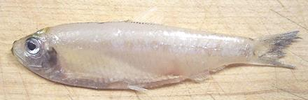

White Anchovy

[species unidentified]
This anchovy was acquired from an Asian market in Los Angeles. There are
so many anchovy species that all look almost exactly alike, and as many
without photos as with them on Fishbase, I'm not going to try to guess
species or range, but it's almost certainly not the Mediterranean White
Anchovy listed in Fishbase. The photo specimen was 3-1/4 inches long and
weighed about 0.1 ounce (10 to the ounce).
More on Anchovies.
Buying:
I have found these in Asian markets in Los Angeles,
but they are strictly a "buy it when you see it" item, not something that
is often in stock.
Cooking:
This is pretty much a "fry 'em up and eat 'em
head guts and feathers" sort of fish. Those in the photo were lightly
dusted with rice flour and deep fried (rice flour doesn't brown much so
the white color is maintained). Serve with a Southeast Asian fish sauce
and rice vinegar dip.
sf_anchowhz 110424 - www.clovegarden.com
©Andrew Grygus - agryg@clovegaden.com - Photos on this
page not otherwise credited are © cg1 -
Linking to and non-commercial use of this page permitted